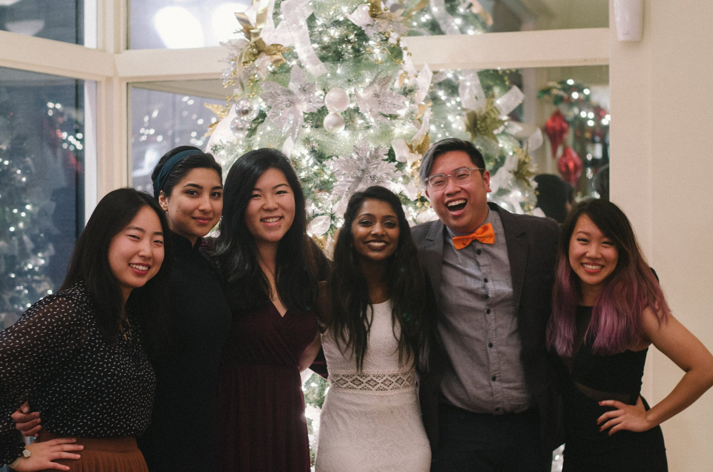

In the Fall 2016 Semester, through Berkeley Innovation, I worked on a consulting project for Nourish Technologies on their product BreakfastBox, desgining a restaurant interface and mobile ordering app to create a more streamlined and joyful morning experience. My team and I conducted user research, ideated for physical and mobile prototypes, and built multiple phyiscal prototypes for the restaurant and functional prototypes for the app.
I worked with Varna Vasudevan, Marisa Ahmed, and Kate Lee on this project. We were mentored by Karen Li and Tim Guan.
At this time, I can't go into details about this project, but feel free to contact me if you have any questions!
